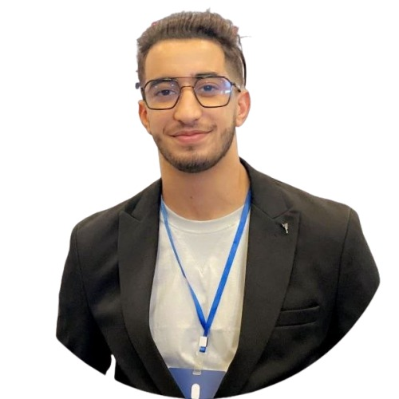

Oran, Algérie · Master en France visé
Ishak
Boussaid
Élève-ingénieur en télécommunications et réseaux IP, tourné vers l’architecture réseau, le cloud et la cybersécurité.
Survolez le réseau : chaque routeur dévoile une de mes compétences.
À propos

IBJe suis en 5e année à l’ENSTTIC d’Oran et candidat à un Master en France en réseaux, cloud et cybersécurité. J’aime comprendre comment un paquet voyage d’un point à l’autre, puis construire et sécuriser le chemin.
Mes compétences en routage, commutation et infrastructure cloud sont renforcées par deux stages et une certification Oracle Cloud Infrastructure.
- LanguesArabe : langue maternelle
Français B2 : voir le certificat (PDF)
Anglais C1 : voir le certificat (PDF) - Engagement Membre du club Igenergie, pratique du jujitsu
Stagiaire, Mobilis ATM
Chlef. Contribution à des projets techniques et appui aux équipes au quotidien.
Voir l’attestation de stage (PDF)Certification Oracle Cloud Infrastructure
Oracle Cloud Infrastructure 2025 Certified Foundations Associate.
Voir le certificat (PDF)Stagiaire, Algérie Télécom
Chlef. Découverte des équipements MSAN et de la fibre optique, participation à la supervision et à la maintenance des réseaux.
Voir l’attestation de stage (PDF)Diplôme d’ingénieur d’État, ENSTTIC
Télécommunications et réseaux IP, 5e année.
Compétences
Cliquez sur une catégorie pour afficher son contenu.
Projets
Contact
Un stage, un échange sur un projet réseau ou cloud ? Écrivez-moi, je réponds vite.